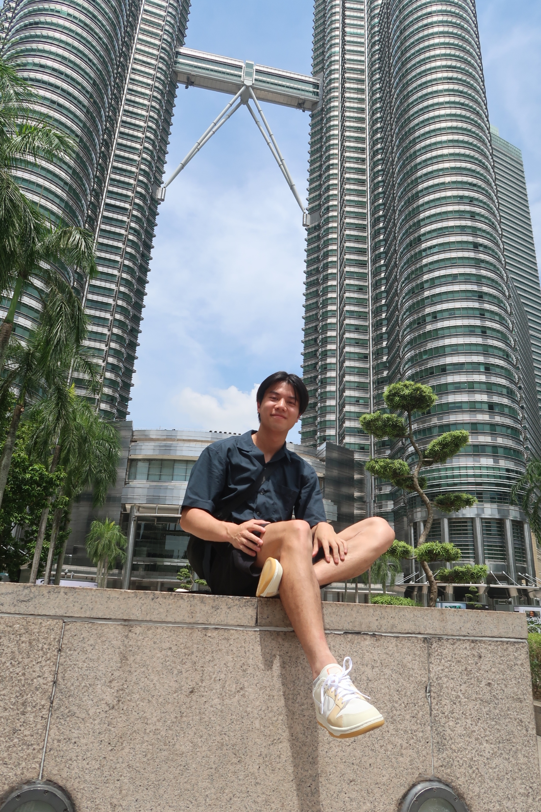
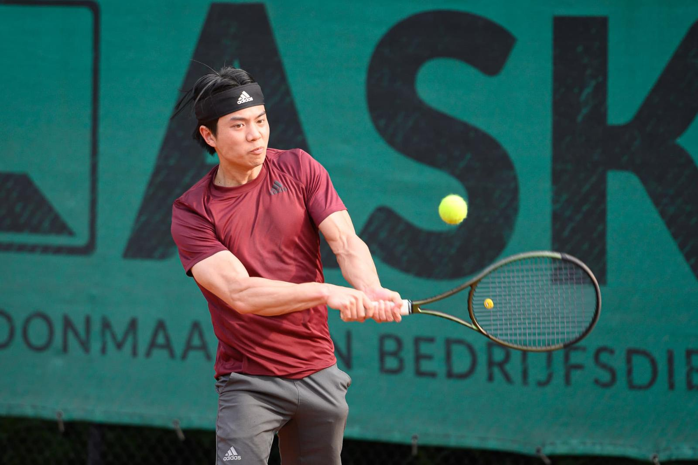
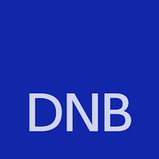
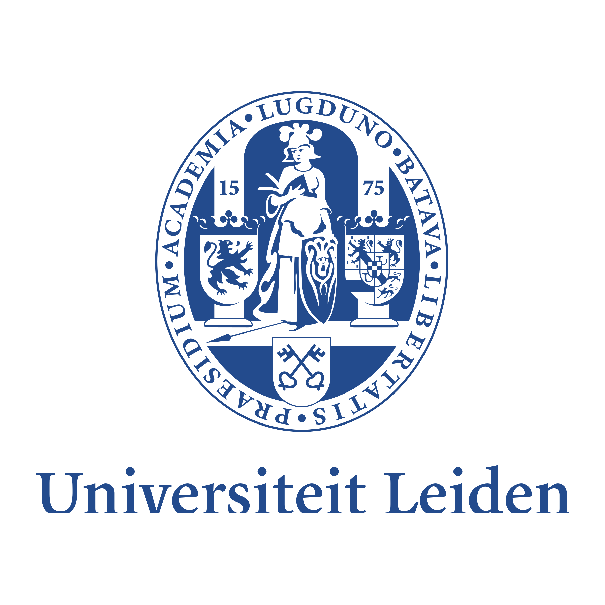

07 · Hobbies
Online
MSc Computational Science. Specialising in machine learning, data engineering & data science.

I'm a computational science graduate with a flexible, results-driven mindset and a genuine passion for data. My work centres on machine learning, data engineering and data science.
I thrive on complex problems, love the process of learning, and find real satisfaction in building solutions that make a measurable impact.

Working within the Accountancy supervision sector, collaborating closely with toezichthouders and cross-functional teams. Building LLM applications and predictive models, regularly presenting findings to stakeholders, and working within a DevOps team to deliver production-grade data products.
Worked within the Data Science cluster of BC_M&MI. Key contributor to project 'Plutus' — predicting stablecoin volatility using econometric and ML models. Delivered EDA, presentations, and participated in workshops.
Helped middle and high school students improve in STEM subjects, often turning failing grades into passes.
Delivered excellent customer service and coordinated with kitchen during peak hours.

Predicting volatility of USDT & USDC using time series econometric and ML models. Large-scale data engineering, feature selection, and exploratory analysis in collaboration with De Nederlandsche Bank.
Download Report ↓
Built the game of checkers and Minimax / MCTS algorithms entirely from scratch in C++. Conducted a detailed playstyle comparison between both algorithms.
Download Report ↓A flashcard-based language learning app, live and hosted online. Features a full login system, friend system, in-app shop, and progress tracking.
Visit site →